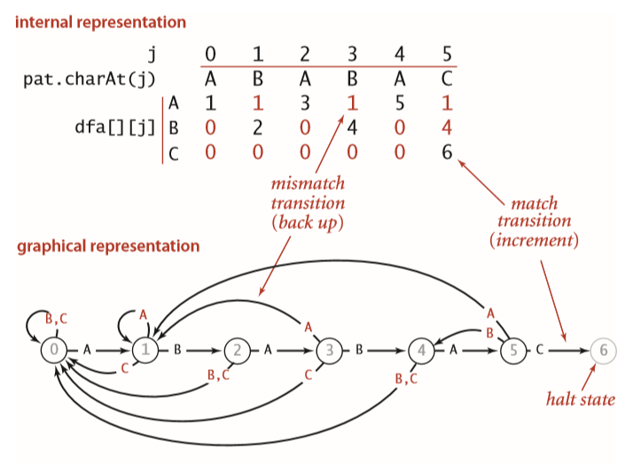
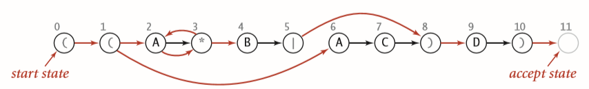
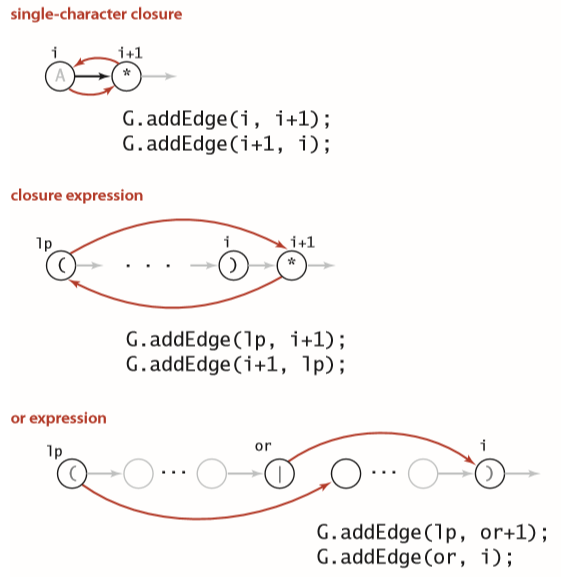

KMP算法和正则表达式匹配算法
之所以把这两个算法何在一起说，是因为二者有相似之处，一个用了DFA的思想，一个用了NFA的思想。
KMP算法
KMP算法的思想是，当匹配失败时，可以利用已经知晓的一部分文本内容，避免从头开始重新匹配。这个匹配的过程可以使用有限状态自动机（DFA）。下面利用下图来说明这个问题：

具体的来说，就是当匹配失败的时候，回退到一个适当的位置，如字符串AA进行匹配，从状态0开始匹配，第一个能够匹配，进入到状态1，然后第二个A进行匹配，失败，需要回退，这时候，回退到是1,而不是0。下一个匹配的是B。如果以前接触过状态机的话，这个过程还是很好理解的。
但KMP算法的难点不是如何模拟DFA的运行，而是如何构造出这个DFA。下面说说我个人的理解，我个人的理解是基于递推的。构造DFA关键在于，如果失败，应该回退到哪里？因为成功的情况比较好理解，成功就前进一步。如果失败，返回上一次失败的匹配。
先把代码贴上来吧：
#include<bits/stdc++.h>
using namespace std;
#define R 256
vector<vector<int>> getDfa(string &substr){
vector<vector<int> > dfa(R,vector<int>(substr.size(),0));
//初始化第一列
dfa[substr[0]][0] = 1;
int x = 0;
for(int j=1;j<substr.size();j++){
for(int i=0;i<R;i++){
dfa[i][j] = dfa[i][x];
}
dfa[substr[j]][j] = j + 1;
x = dfa[substr[j]][x];
}
return move(dfa);
}
int kmp(string str, string substr){
vector<vector<int> > dfa = getDfa(substr);
int j = 0,i=0;
for(i=0;i<str.size() && j < substr.size();i++){
j = dfa[ str[i] ][j];
}
if(j == substr.size()){
return i - j;
}
return -1;
}
KMP算法还有另外一种写法。
vector<int> kmp(string &s, string &p){
vector<int> pos;
vector<int> next(p.size()+1, 0);
for(int i=1;i<p.size();i++){
int j = next[i];
while(j>0 && p[i] != p[j]){
j = next[j];
}
next[i+1] = p[i] == p[j]?j+1:0;
}
int j = 0;
for(int i=0;i<s.size();i++){
while(j>0 && s[i] != p[j]){
j = next[j];
}
if(s[i] == p[j]){
j++;
}
if(j == p.size()){
pos.push_back(i-j+1);
}
}
return pos;
}
其中，next数组表示的含义为：字符串中以i结尾的非前缀子串（不能包含第一个字符）与字符串的前缀能够匹配的最长长度。当没有非前缀子串时，next[i] = 0。
从这种角度思考KMP会更好理解一点，当匹配失败时，就后退字符串，此时，最优的地方是next[i-1]，如果还匹配失败，就后退到next[next[i-1]]，直到退回到字符串的首字符。
正则表达式匹配算法
正则表达式的匹配算法是基于NFA的，它的运行模式是这样的，有两种装换状态，黑色的和红色的，如下图。黑色的表示需要字符才能装换，如2状态，就需要接受一个字符A才能装到3,；红色状态代表可以自动进行装换。如3状态，可以自动转化到状态2和状态4。NFA运行的过程为，每一个状态都需要自动装换，直到不能进行自动装换。然后和进行黑色的装换，注意，每个可达的状态都需要进行处理。如从0状态开始，可以通过红色转换到达的状态为1，2，3，4，6，加上0，一共是6个状态。如果要匹配的第一个字符是A，2状态可以转化为3，然后3进行自动转换，到达2，和4，6状态接受A到达状态7，不能进行自动转化。所以第二次等待的状态为2，3，4，7。

如何记录这个NFA，黑色的部分可以使用正则表达式本身来保存，而红色的部分可以使用有向图来表示。那么如何构造这个NFA，在《算法（第四版）》中给出了下面的图：

有了这个图，大致可以得到代码，这里有一个技巧，就是使用栈进行括号的匹配。遇到左括号就压栈，遇到有括号就检查栈中有没有左括号，如果没有匹配就失败了。如果匹配到最后，栈中还有左括号，也失败了。这里NFA的构造也用了上面这个技巧，只不过多加了一个字符。
模拟NFA的运行也是比较容易的，就是先进行自动转化，初始化。然后对于每一个字符，先进行黑色转换，然后进行红色装换，重复上面过程，直到最后一个字符，如果在最后的状态中有结束状态，则认为匹配成功，否则匹配失败。具体的代码如下：
#include<iostream>
#include<vector>
#include<string>
#include<queue>
#include<stack>
using namespace std;
void nfa(vector<vector<int> > &graph, string &txt){
stack<int> ops;
int n = txt.size();
for(int i=0;i<n;i++){
int lp = i;
if(txt[i] == '(' || txt[i] == '|'){
ops.push(i);
}else if(txt[i] == ')'){
int op = ops.top();
ops.pop();
if(txt[op] == '|'){
lp = ops.top();
ops.pop();
graph[op].push_back(i);
graph[lp].push_back(op+1);
}else{
lp = op; /* find closest '(' */
}
}
if(i<n-1 && txt[i+1] == '*'){
graph[lp].push_back(i+1);
graph[i+1].push_back(lp);
}
if(txt[i] == '(' || txt[i] == '*' || txt[i] == ')'){
graph[i].push_back(i+1);
}
}
}
void bfs(vector<vector<int> > &graph, vector<int> &vertex){
int n = graph.size();
vector<bool> marked(n+1,false);
queue<int> q;
for(int i=0;i<vertex.size();i++){
marked[vertex[i]] = true;
q.push(vertex[i]);
}
while(q.size() > 0){
int v = q.front();
q.pop();
for(int i=0;i<graph[v].size();i++){
if( marked[ graph[v][i] ] == false){
vertex.push_back( graph[v][i] );
marked[ graph[v][i] ] = true;
q.push( graph[v][i] );
}
}
}
}
bool match(string txt,string pattern){
vector<vector<int> > graph;
for(int i=0;i<=pattern.size();i++){
graph.push_back(vector<int>());
}
nfa(graph,pattern);
/* print nfa */
// for(int i=0;i<graph.size();i++){
// cout<<i<<": ";
// for(int j=0;j<graph[i].size();j++){
// cout<<graph[i][j]<<" ";
// }
// cout<<endl;
// }
vector<int> vertex;
vertex.push_back(0);
bfs(graph,vertex);
for(int i=0;i<txt.size();i++){
if(txt[i] == '.' || txt[i] == '*' || txt[i] == ')' || txt[i] == '('){
cout<<"text contains the metacharacter '"<<txt[i]<<"'"<<endl;
return false;
}
vector<int> v;
for(int j=0;j<vertex.size();j++){
if(vertex[j] < pattern.size()
&& ( txt[i] == pattern[vertex[j]] || pattern[vertex[j]] == '.') ){
v.push_back(vertex[j] + 1);
}
}
bfs(graph,v);
vertex = v;
}
for(int i=0;i<vertex.size();i++){
if(vertex[i] == pattern.size() - 1){
return true;
}
}
return false;
}
int main(){
string s;
bool ret;
while(cin>>s){
ret = match(s,"((A*B|AC)D)");
if(ret == true){
cout<<s<<endl;
}else{
cout<<"fail"<<endl;
}
}
return 0;
}
这部分在《算法（第四版）》中有一个bug，就是不支持正则表达式的元字符，但是在代码中没有做相应的处理。去了书的官方网站，找到了代码的github地址，发现github上已经修复了代码。这里的正则表达式还有一点要注意，需要在正则表达式的两边加一个括号，但这个比较好处理。上面的也可以处理，但是有一点麻烦。作为示例，就不做处理了。